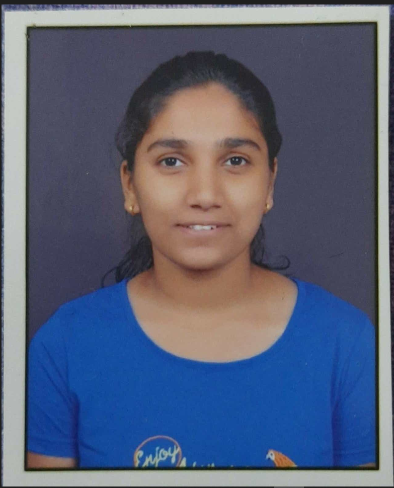

Komal Vijay Hadimani
Final Year Computer Science and Engineering Student

Summary
An aspiring undergraduate desiring to obtain an opportunity that will help me to expand my practical knowledge
and skills.
Education
Bachelor of Engineering (CSE)
KLS Gogte Institute of Technology,Belgaum
Projects
- Crime Database Management System
- Using HTML, CSS, Bootstrap, MySQL and PHP
- It is an web application with database system in which police will keep records of all the criminals,victims, FIR, registered against crime.
- Online Fitness Gym
- Using HTML, CSS, Bootstrap, MySQL and PHP
- It is an web based application which provided fitness services and blogs to the customers.
- It is an easy way to manage gym and health gym membership system in which police will keep records of all the members and thier memberships.
Internship
- Project Intern- IIT Delhi
- 01/2022-05/2022
- Worked on the project- Endoscopic Tool Tracking
- Lead the team
- Annotated 3500 frames
- Data Anaylst- Reputes Business Solutions
- 08/2021-10/2021
- Technologies- Microsoft Excel, Tableau, WIX
- Gained experience on Microsoft Excel to analyze real time data from IPL data. Implemented the same using Tableau
- Worked on the initial stages of Website development for E-Commerce using WIX
Skills
- Java
- HTML
- CSS
- RDBMS
- Git
- GitHub
Achievements
- Winners at "CODE FIESTA 2.0
- Participated in Fork-N-Summit: Open Source Contribution Program
- Winners at VTU Belagavi Zone Badmintob (Women) Tournament 2021-22 Organised by GEC, Haveri
- Conducted a Cyber Security Awarness Programmme
Contact Me
Hobbies